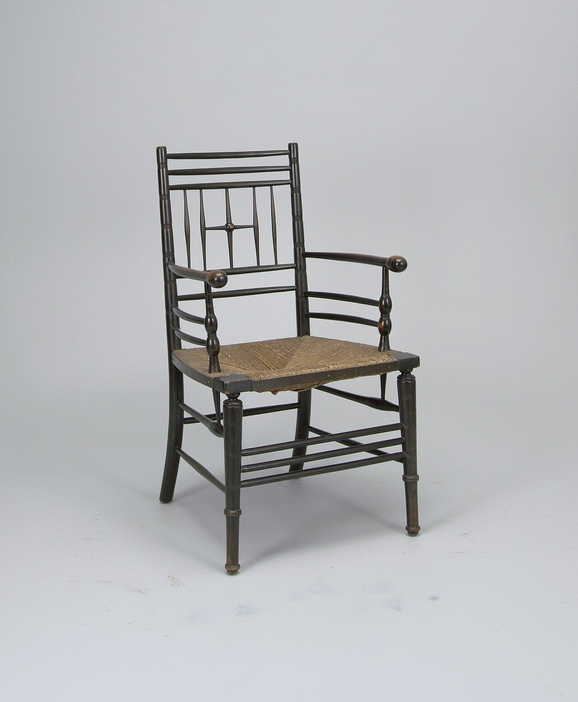

References / Furniture / 263
Morris & Co. Sussex armchair
A light, ebonized country armchair with turned spindles and a rush seat, sold by Morris & Co. as cheap, plain furniture.
- Source
- Cooper Hewitt: “Sussex” Chair, 2004-29-2
- Creator
- Morris & Co.
- Made
- Late 19th century
- Style
- Arts and Crafts (agent-proposed, not yet reviewed by a person)
- Moods
- Plain, rustic, honest
- Evidence
- Inspected the Cooper Hewitt, Smithsonian Design Museum photograph of 2004-29-2 through its Commons copy.jpg) (2848 × 3457 px; viewed at 1280 px wide). Cooper Hewitt’s site was not opened; the object data come from the Commons record. The museum credits only Morris & Co., not a designer.
- Reviewed
- Rights
- Open license, stored. License: public domain. Rights policy
Context
Cooper Hewitt describes an ebonized beech armchair with turned back sections, supports, and legs, and a rush seat set into the frame; 95 × 54.5 × 56 cm; late 19th century; made by Morris & Co.; Gift of Arthur Sanderson & Sons, Ltd. Commons record of the Cooper Hewitt image.jpg).
Observed
- The frame is thin, turned wood stained black, with fine ring turnings on the posts and legs.
- The back has three horizontal rails over a row of thin spindles; the middle spindle is crossed by a short bar with a small bead.
- The arms are straight rails ending in round knobs, carried on short baluster-turned supports.
- The seat is woven rush in natural straw colour, inside a square frame with black corner blocks.
- There is no carving, inlay, or pattern.
Why it belongs
The chair shows that Morris & Co. sold plain, vernacular goods alongside its dense patterns. It belongs to the movement’s ideals rather than to the patterned graphic core that this record describes.
It is close to the plain Ashbee kettle: honest material and structure with no applied ornament.
Borrow
Use thin, repeated vertical lines, like spindles, as a quiet structural rhythm.
Pair near-black with one natural material colour, such as straw.
Measured
Machine-extracted by tools/image-traits.py on . Full measurement.
- Mean chroma
- 0.02
- Palette
- #c1c2c6 55%
- #cdd0d5 22%
- #b4b7b9 9%
- #2e2c28 4%
- #4a4742 3%
- #8e8c8d 3%
- #7b6f61 3%
- #9e9fa1 2%

